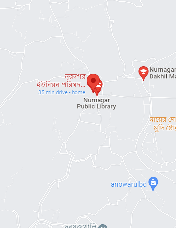

নূরনগর ইউনিয়ন পরিষদ
সুজলা সুফলা শস্য শ্যামলা বাংলাদেশের সর্বদক্ষিনের সর্ব বৃহৎউপজেলাশ্যামনগরের দক্ষিনের সুন্দরবনের কোল ঘেষে যে ইউনিয়নটি গর্বের সাথে মাথা উচুকরে দাড়িয়ে আছে তার নাম " ৪ নং নূরনগর ইউনিয়ন পরিষদ"। শিক্ষাদীক্ষা, মানবউন্নয়ন, অবকাঠামোগত উন্নয়ন সর্বোপরি শুখ শান্তি সমৃদ্ধি কি নেই এখানে।প্রকৃতি যেন তার মনের মাধুরী মিশিয়ে সাজিয়েছে এ ইউনিয়নটিকে।
এক নজরে নূরনগর ইউনিয়নের মৌলিক তথ্য

| আয়তন –৩৭ (বর্গ কিঃ মিঃপ্রায়) | লোকসংখ্যা – ২২,৩৫৭ জন |
| গ্রামের সংখ্যা – ২০ টি | মৌজার সংখ্যা – ২০ টি |
| হাট/বাজার সংখ্যা -১ টি | শিক্ষার হার – ৯৬% |
| সরকারী প্রাথমিক বিদ্যালয়- ০৪টি | বে-সরকারী রেজিঃ প্রাঃ বিদ্যালয়- ০৭টি |
| উচ্চ বিদ্যালয়ঃ ১টি | মহিলা মাদ্রসা : ১টি |
| দাখিল মাদ্রাসা- ১টি | গুরুত্বর্পূণ ধর্মীয় স্থান- ২ টি |